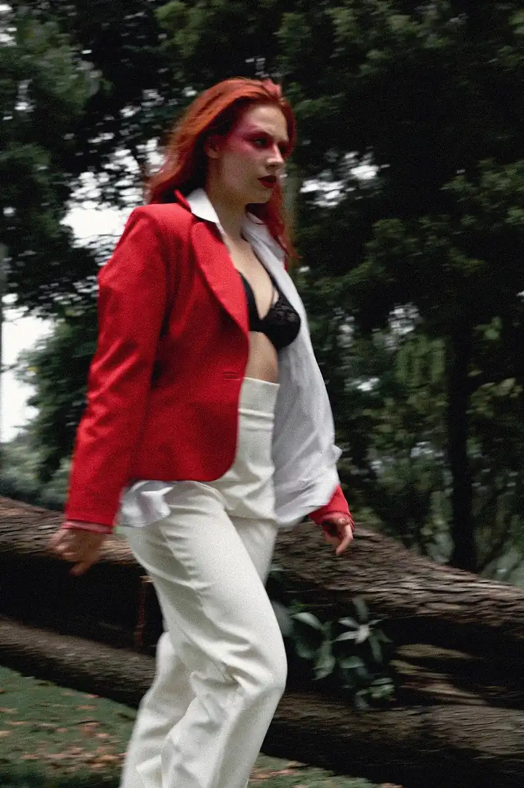
Evania
A grace of quiet elegance
PORTFOLIO
EDITORIAL
Evania explores beauty through refined presence — where softness, strength and style exist in balance
MODEL: Alejandra González
MUA: Sofia
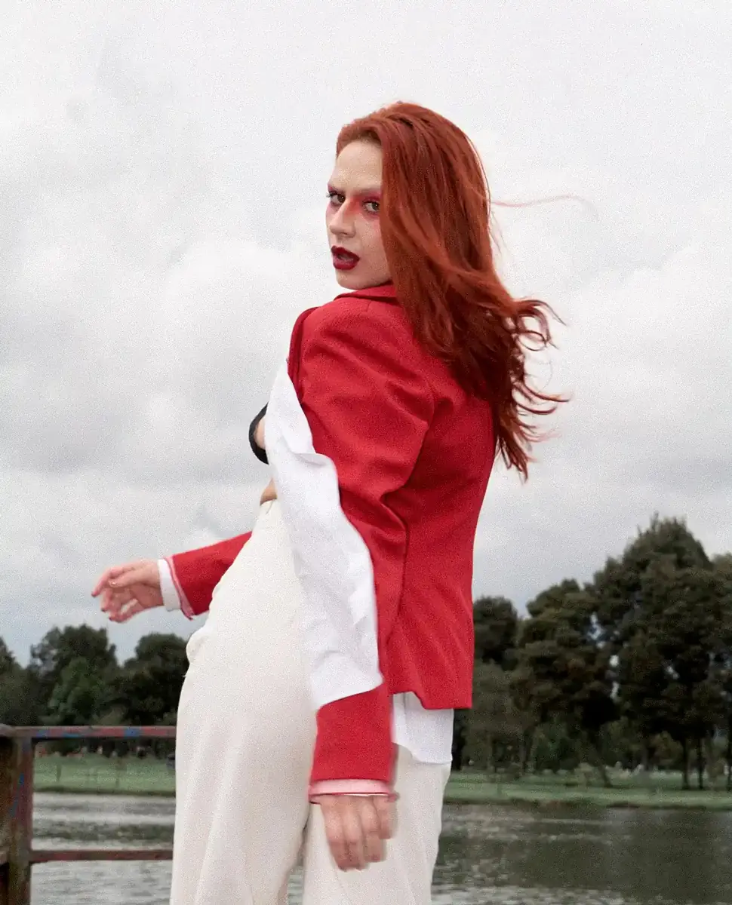
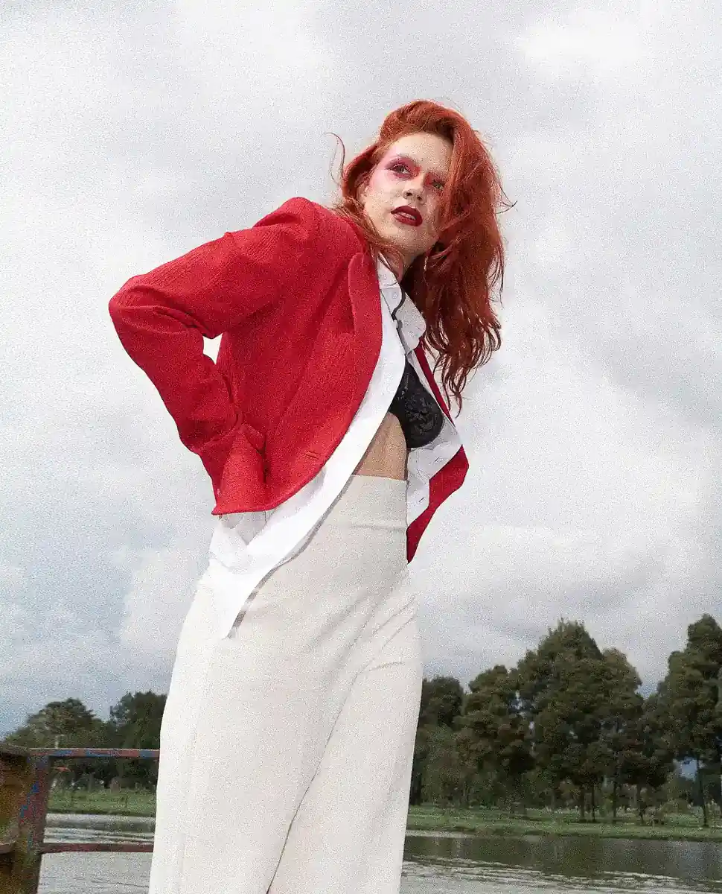
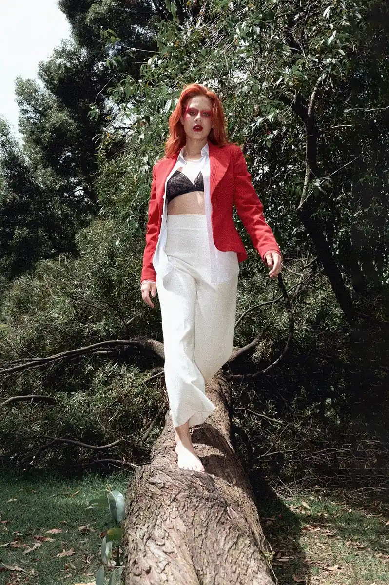
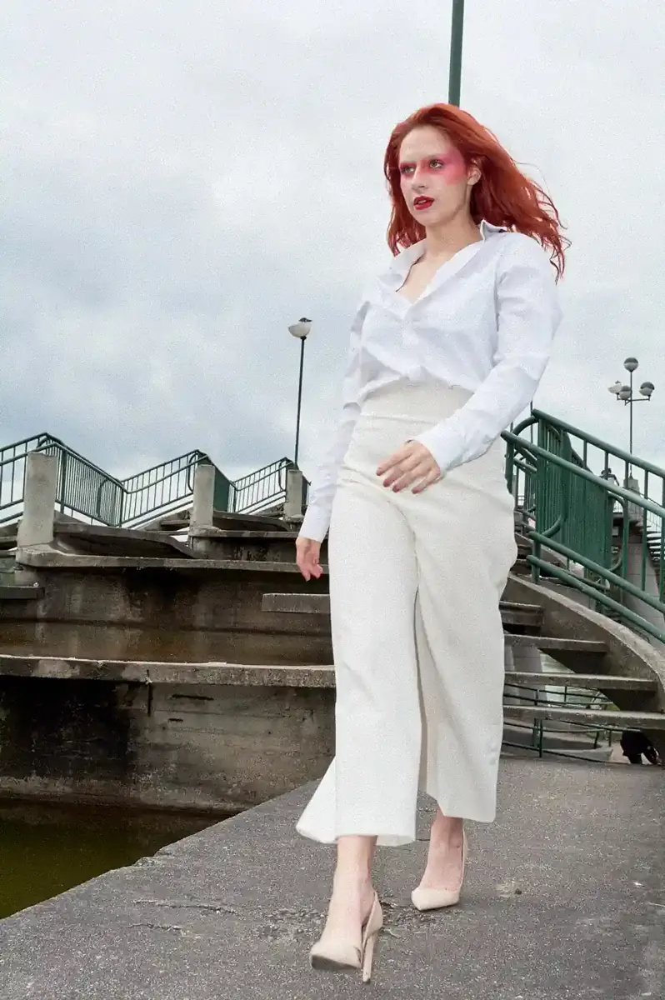
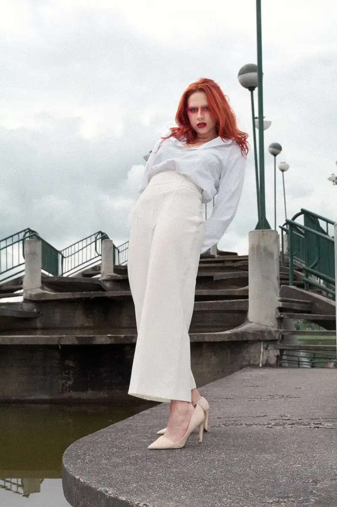
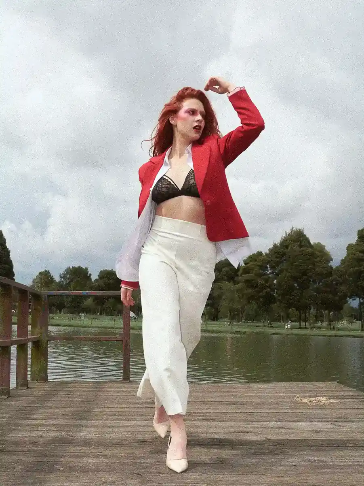
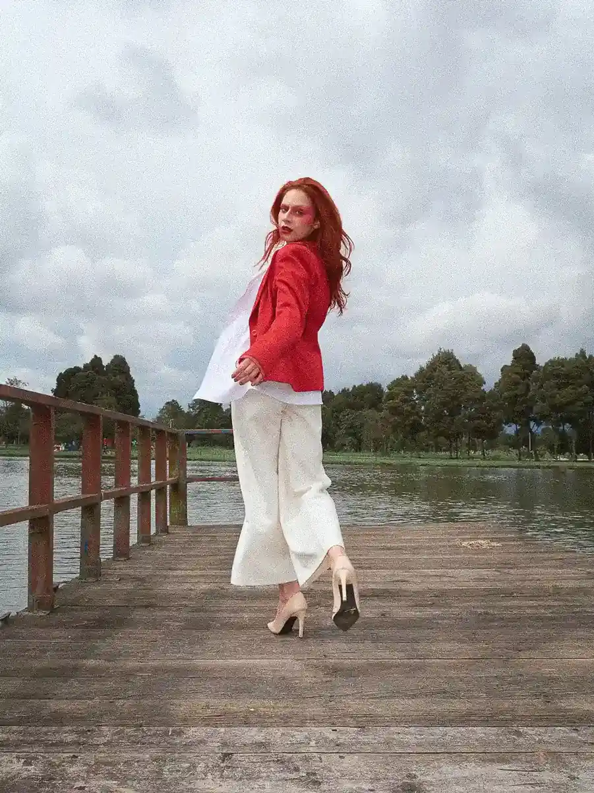
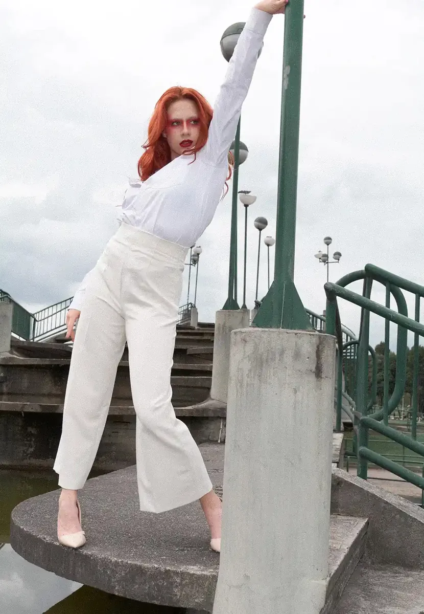
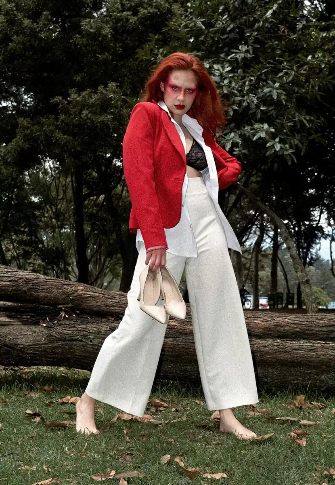
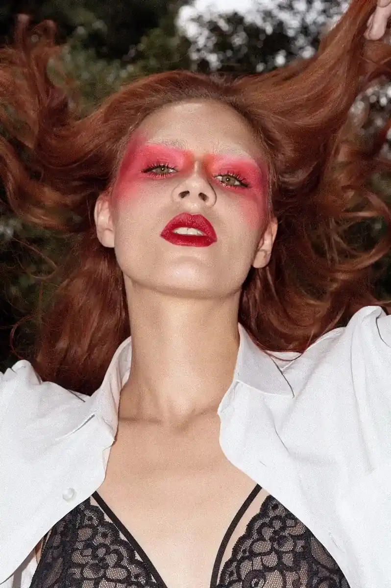